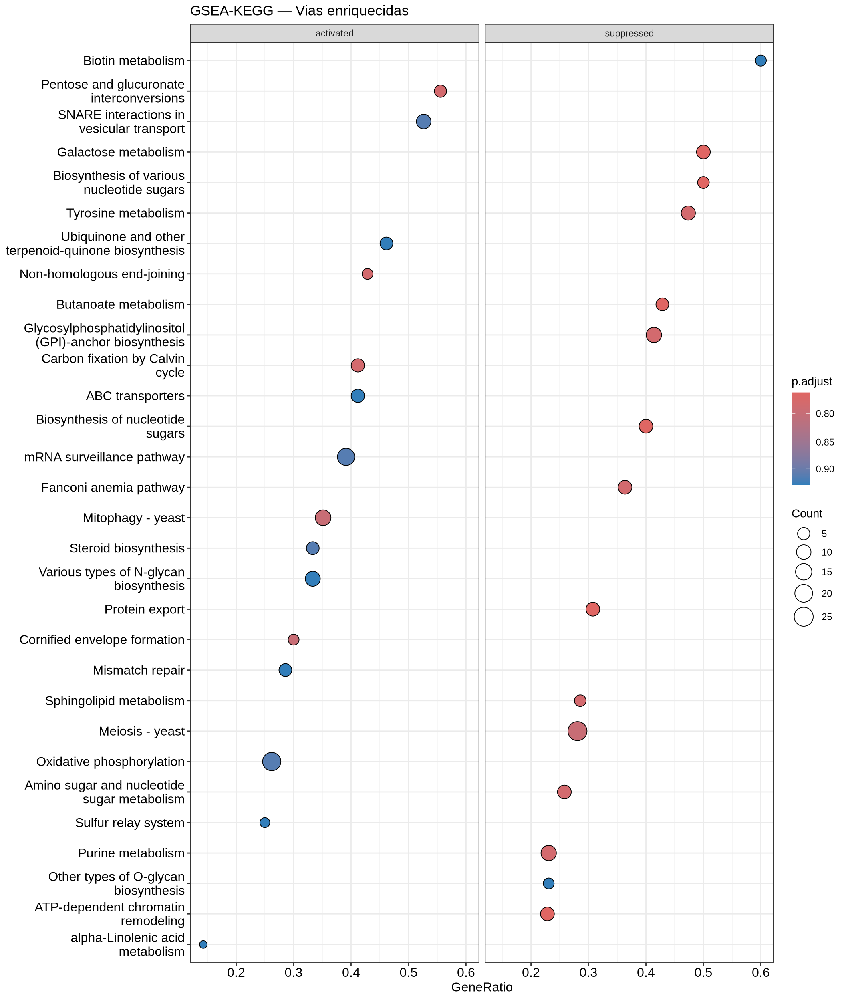
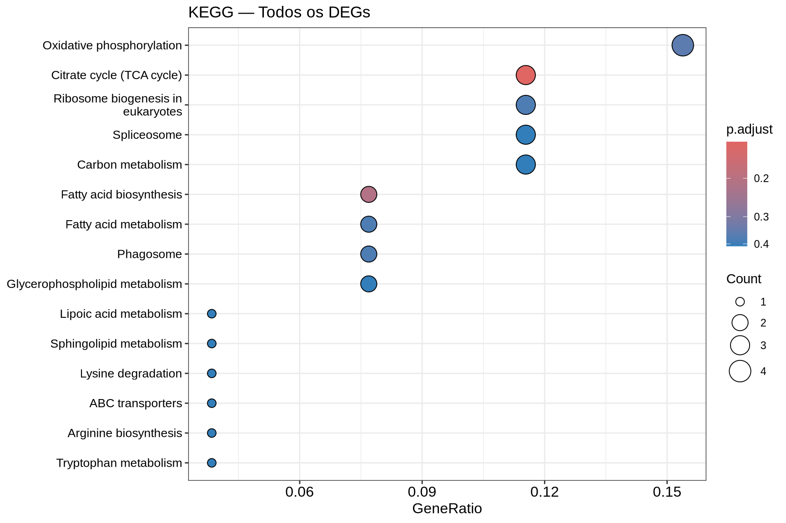
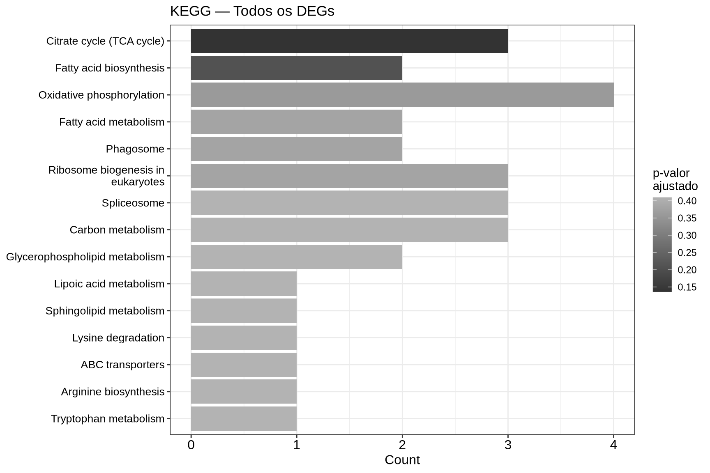
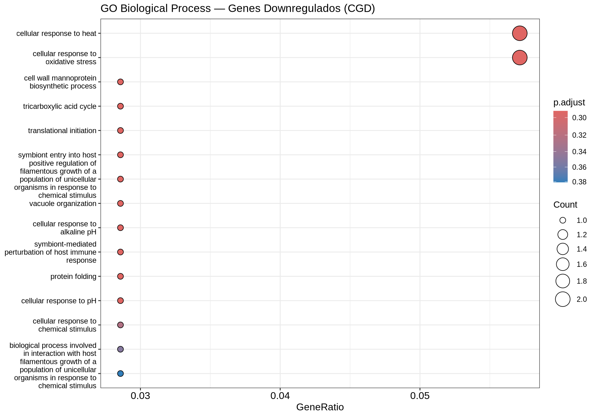
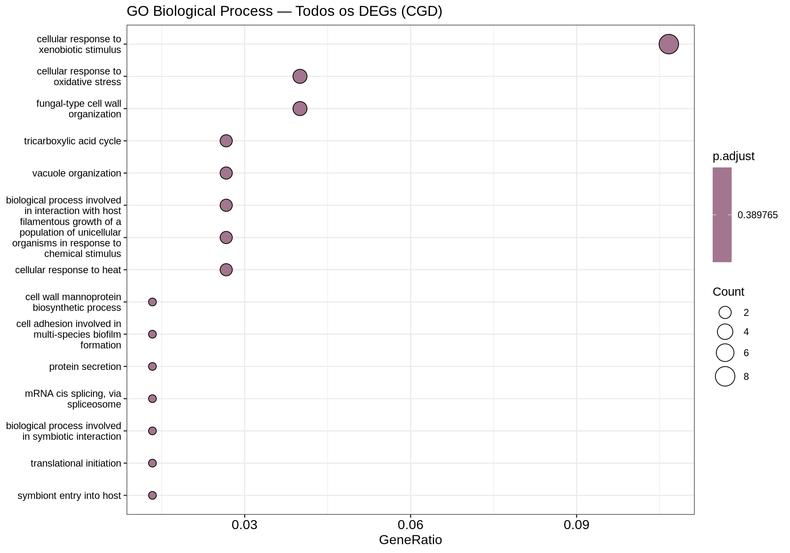
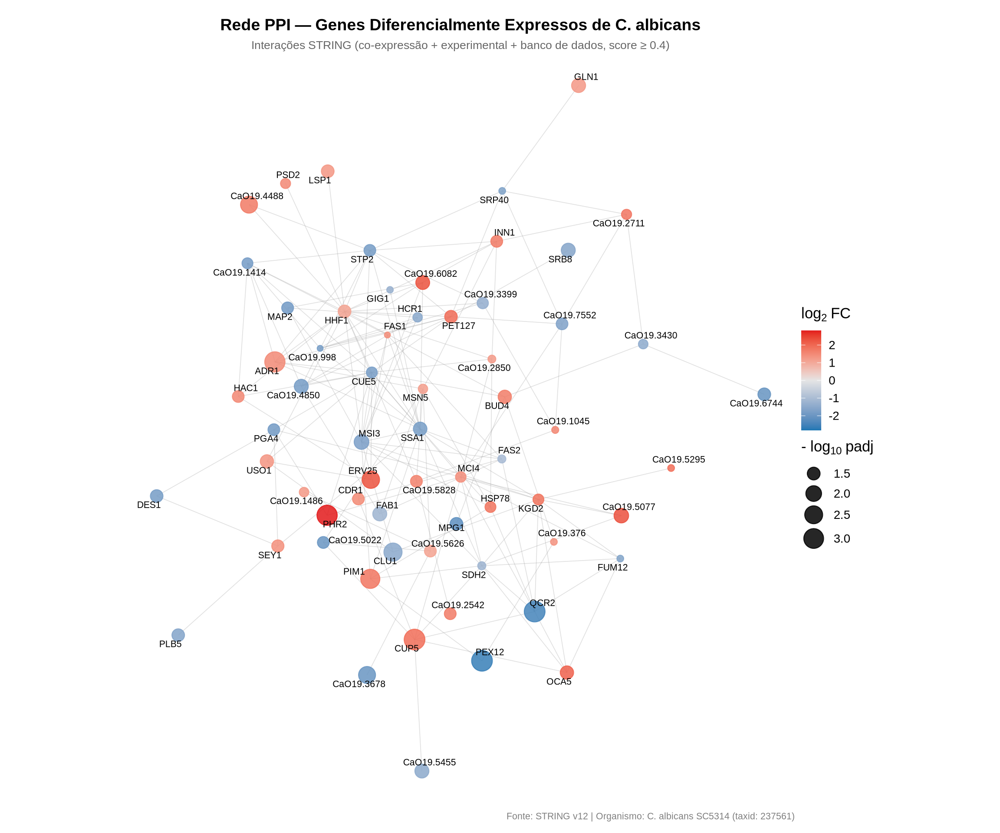

6 Análises Downstream
Na etapa anterior, identificamos quais genes da Candida albicans tiveram sua expressão significativamente alterada pelo tratamento com vancomicina. Mas uma lista de genes, por si só, diz pouco sobre a biologia do organismo. Para extrairmos significado biológico, precisamos perguntar: esses genes pertencem a vias biológicas específicas? Há processos celulares mais afetados do que o esperado ao acaso?
É exatamente isso que a análise de enriquecimento funcional nos permite responder.
7 Enriquecimento Funcional
A análise de enriquecimento funcional verifica se, entre os genes diferencialmente expressos, há um número desproporcional de genes pertencentes a uma determinada via biológica ou processo celular. Se encontrarmos mais genes alterados em uma via do que o esperado por acaso, dizemos que essa via está enriquecida.
A abordagem que utilizaremos é a ORA (Over-Representation Analysis), que parte da nossa lista de genes significativos e aplica um teste hipergeométrico para verificar quais vias estão sobre-representadas. Para os bancos de dados, utilizaremos o KEGG Pathways e o Gene Ontology (GO).
7.1 O que são GO e KEGG?
7.1.1 Gene Ontology (GO)
O Gene Ontology é um sistema de ontologias que descreve a função dos genes em três dimensões independentes (ontologias):
- Biological Process (BP): o processo celular de que o gene participa (ex: resposta a estresse oxidativo, biossíntese da parede celular).
- Molecular Function (MF): a atividade molecular que a proteína exerce (ex: atividade de quinase, ligação a ATP).
- Cellular Component (CC): onde no espaço celular a proteína atua (ex: núcleo, membrana plasmática).
A GO é organizada como um grafo acíclico dirigido (DAG): termos mais gerais (ex: processo metabólico) estão no topo da hierarquia, e termos mais específicos (ex: biossíntese de ergosterol) estão na base. Um gene pode ser anotado em múltiplos termos e em múltiplas ontologias simultaneamente.
7.1.2 KEGG Pathways
O KEGG (Kyoto Encyclopedia of Genes and Genomes) é um banco de dados que organiza o conhecimento biológico em mapas de vias metabólicas e de sinalização. Cada via é um diagrama que conecta enzimas, metabólitos e reações em sequência, representando processos como a glicólise, o ciclo do TCA ou a biossíntese de aminoácidos.
Diferente do GO, o KEGG tem uma estrutura plana (não hierárquica): cada via é independente e autocontida. Além disso, o KEGG inclui informações sobre reações bioquímicas e compostos químicos, o que o torna especialmente útil para estudar metabolismo.
7.1.3 Principais diferenças
| Característica | Gene Ontology (GO) | KEGG Pathways |
|---|---|---|
| Estrutura | Hierárquica (DAG) | Plana (mapas independentes) |
| Foco | Funções, processos e localização | Vias metabólicas e de sinalização |
| Granularidade | Alta (termos muito específicos a gerais) | Moderada (vias completas) |
| Curadoria | Comunidade científica global | Equipe centralizada (Kanehisa Lab) |
| Organismo | Ampla cobertura (via OrgDb ou GAF) | Código por organismo (ex: cal) |
7.2 A Importância dos Bancos de Dados Curados
Antes de começar, é fundamental entender que o enriquecimento funcional depende inteiramente da qualidade e completude das anotações disponíveis para o organismo estudado. Para organismos-modelo como Homo sapiens ou Mus musculus, bancos como KEGG, Gene Ontology e Reactome possuem anotações extensas, curadas por décadas de pesquisa. O resultado é que milhares de genes estão anotados em centenas de vias biológicas, e o teste estatístico tem alta chance de encontrar padrões significativos.
Para organismos não-modelo como Candida albicans, a situação é diferente:
- Menos genes anotados: uma fração menor do genoma possui anotação funcional.
- Menos vias catalogadas: o número de vias biológicas mapeadas é mais restrito.
- Anotações menos curadas: muitas anotações são inferidas computacionalmente (IEA - Inferred from Electronic Annotation), e não por evidência experimental direta.
Isso significa que, mesmo que nossos genes estejam participando de processos biológicos relevantes, se esses processos não estiverem adequadamente anotados no banco de dados, o enriquecimento simplesmente não os detectará. Por isso, para C. albicans, utilizaremos tanto o KEGG (que suporta o organismo nativamente) quanto as anotações curadas do Candida Genome Database (CGD), o banco de referência para genômica de Candida, que possui mais de 33 mil anotações GO específicas.
Em publicações científicas, os cortes padrão para enriquecimento são p.adjust ≤ 0.05 e qvalue ≤ 0.05. Neste minicurso, utilizamos thresholds mais permissivos (p.adjust ≤ 0.5 e qvalue ≤ 0.5) para fins didáticos, de modo que seja possível visualizar e interpretar os gráficos de enriquecimento mesmo com um número reduzido de DEGs. Em um cenário de pesquisa real, recomendamos utilizar os cortes padrão.
7.3 1. Carregando os Pacotes
7.4 2. Carregando os Resultados da Expressão Diferencial
Vamos recuperar a tabela de resultados que salvamos no módulo anterior:
baseMean log2FoldChange lfcSE stat pvalue padj
C1_00010W_A 0.13073479 0.2439030 2.5493706 0.09567186 0.9237812 1.0000000
C1_00020C_A 1.35871278 -0.7858614 0.5442897 -1.44382928 0.1487870 0.5357854
C1_00030C_A 0.02292633 0.2485875 2.9448570 0.08441413 0.9327272 1.0000000
C1_00040W_A 0.03442856 0.3688108 2.9448570 0.12523896 0.9003344 1.0000000
C1_00050C_A 0.03644129 -0.1120823 2.9448570 -0.03806036 0.9696396 1.0000000
C1_00060W_A 0.36778762 0.4121354 1.3458047 0.30623715 0.7594241 1.0000000
signif
C1_00010W_A Not significant
C1_00020C_A Not significant
C1_00030C_A Not significant
C1_00040W_A Not significant
C1_00050C_A Not significant
C1_00060W_A Not significant7.5 3. Preparando os Conjuntos de Genes
Vamos preparar três conjuntos de genes para o enriquecimento: os upregulados, os downregulados e todos os DEGs juntos.
Genes upregulados: 40 Genes downregulados: 35 Total DEGs: 75 7.6 4. Conversão de Identificadores para o KEGG
Os nossos identificadores de genes seguem o padrão do Ensembl Fungi (ex: C1_00010W_A), mas o KEGG utiliza um formato próprio para C. albicans (ex: CAALFM_C100010WA). Precisamos construir o dicionário para conversão:
# Baixar os nomes dos genes de C. albicans (cal) do KEGG
kegg_genes <- keggList("cal")
# Criar tabela de mapeamento
kegg_mapping <- data.frame(
kegg_id = sub("cal:", "", names(kegg_genes)),
description = as.character(kegg_genes),
stringsAsFactors = FALSE
)
# Gerar o ID Ensembl Fungi equivalente a partir do KEGG ID
kegg_mapping <- kegg_mapping %>%
mutate(
core = sub("^CAALFM_", "", kegg_id),
ensembl_id = gsub(
"^(C[0-9R]+)(\\d{5})(\\w)(\\w)$",
"\\1_\\2\\3_\\4",
core
)
)
# Verificar quantos dos nossos genes têm correspondência
genes_com_kegg <- sum(rownames(res_dge) %in% kegg_mapping$ensembl_id)
cat("Genes mapeados para KEGG:", genes_com_kegg, "de", nrow(res_dge), "\n")Genes mapeados para KEGG: 6117 de 6468 # Criar dicionário: Ensembl → KEGG
ensembl_to_kegg <- setNames(kegg_mapping$kegg_id, kegg_mapping$ensembl_id)Esse dicionário será usado adiante tanto para o enriquecimento KEGG via GSEA (seção 5) quanto para a construção da rede PPI com o STRING (seção 11).
7.7 5. Enriquecimento KEGG — GSEA
Diferente do ORA, que parte de uma lista discreta de DEGs (filtrada por um cutoff de significância), o GSEA (Gene Set Enrichment Analysis) considera todos os genes ranqueados por uma métrica contínua — tipicamente o log2FoldChange — e verifica se os membros de cada via biológica se concentram nas extremidades do ranking. A pergunta muda:
- ORA: “Há mais DEGs nesta via do que o esperado ao acaso?”
- GSEA: “Os genes desta via estão sistematicamente entre os mais up- ou down-regulados?”
A vantagem é que o GSEA não precisa de cutoff: ele aproveita o sinal coordenado de muitos genes com mudanças pequenas, que o ORA descartaria. O resultado vem na forma de um Normalized Enrichment Score (NES): positivo indica que a via está enriquecida na ponta UP do ranking, negativo na ponta DOWN.
7.7.1 Construindo o vetor ranqueado
Para o GSEA, precisamos transformar a tabela res_dge em um vetor numérico nomeado com todos os genes ranqueados por log2FC e identificados pelo formato KEGG (CAALFM_). Vamos usar o dicionário ensembl_to_kegg que construímos na seção 4:
suppressPackageStartupMessages(library(stringr))
# Vetor: log2FC com nome = Ensembl ID
ranks <- res_dge$log2FoldChange
names(ranks) <- rownames(res_dge)
ranks <- ranks[!is.na(ranks)]
# Converter os nomes para IDs KEGG e ordenar decrescentemente
ranks_kegg <- ranks[names(ranks) %in% names(ensembl_to_kegg)]
names(ranks_kegg) <- ensembl_to_kegg[names(ranks_kegg)]
ranks_kegg <- sort(ranks_kegg[!duplicated(names(ranks_kegg))], decreasing = TRUE)
cat("Genes no ranking (KEGG IDs únicos):", length(ranks_kegg), "\n")Genes no ranking (KEGG IDs únicos): 6023 log2FC — máximo (topo do ranking) : 2.82 log2FC — mínimo (base do ranking) : -2.62 7.7.2 Rodando gseKEGG()
A função gseKEGG() consulta a API REST do KEGG em tempo real para obter as anotações de vias da C. albicans (organism = "cal") e roda o algoritmo de permutação. Como o GSEA é estocástico, fixamos uma semente com set.seed() para garantir que duas execuções da mesma versão do banco produzam exatamente o mesmo resultado:
set.seed(42) # GSEA é estocástica (usa permutações); set.seed garante reprodutibilidade
gsea_kegg <- gseKEGG(
geneList = ranks_kegg,
organism = "cal",
keyType = "kegg",
minGSSize = 5,
maxGSSize = 500,
pvalueCutoff = 0.5,
pAdjustMethod = "BH",
eps = 0,
verbose = FALSE
)
cat("Vias enriquecidas (GSEA):", nrow(as.data.frame(gsea_kegg)), "\n")Vias enriquecidas (GSEA): 62 7.7.3 Dotplot — GSEA KEGG (UP vs. DOWN)
Diferente do dotplot do ORA, o do GSEA já vem separado por direção: cada via aparece no painel activated (NES > 0, regulada para cima) ou suppressed (NES < 0, regulada para baixo).
if (!is.null(gsea_kegg) && nrow(as.data.frame(gsea_kegg)) > 0) {
dotplot(gsea_kegg,
showCategory = 15,
split = ".sign",
title = "GSEA-KEGG — Vias enriquecidas") +
facet_grid(. ~ .sign) +
scale_color_gradient(low = "#E31A1C", high = "#FCBBA1", name = "p-valor\najustado")
} else {
cat("Nenhuma via KEGG enriquecida.\n")
}
7.7.4 Ridgeplot — distribuição de log2FC por via
O ridgeplot mostra, para cada via enriquecida, a distribuição dos log2FC dos seus genes membros. Vias “puxadas” para a direita estão dominantes em UP; para a esquerda, em DOWN.
if (!is.null(gsea_kegg) && nrow(as.data.frame(gsea_kegg)) > 0) {
ridgeplot(gsea_kegg, showCategory = 15) +
labs(title = "GSEA-KEGG — Distribuição de log2FC por via",
x = "log2 Fold Change") +
theme(plot.title = element_text(face = "bold", hjust = 0.5))
} else {
cat("Nenhuma via KEGG enriquecida.\n")
}
7.7.5 Curva de Running Enrichment Score — Top 3 vias
A curva clássica do GSEA mostra como o Enrichment Score “cresce” ou “decresce” à medida que percorremos o ranking do topo (mais UP) até a base (mais DOWN). Picos positivos no início indicam vias UP; vales negativos no final indicam vias DOWN. As marcas verticais (|) abaixo da curva indicam onde caem, no ranking, os genes da via:
7.7.6 Barplot Bidirecional — NES por via
O análogo direto do barplot bidirecional do ORA é usar o NES como métrica: barras vermelhas (UP, NES > 0) crescem para a direita; azuis (DOWN, NES < 0) crescem para a esquerda, compartilhando o mesmo eixo Y:
if (!is.null(gsea_kegg) && nrow(as.data.frame(gsea_kegg)) > 0) {
df_gsea <- as.data.frame(gsea_kegg) %>%
mutate(Direction = ifelse(NES > 0, "Upregulated", "Downregulated"),
term_lbl = str_wrap(Description, 45)) %>%
arrange(desc(abs(NES))) %>%
head(15)
ggplot(df_gsea, aes(x = NES, y = reorder(term_lbl, NES), fill = Direction)) +
geom_col(width = 0.7) +
scale_fill_manual(values = c("Upregulated" = "#E31A1C",
"Downregulated" = "#1F78B4")) +
geom_vline(xintercept = 0, linewidth = 0.5) +
labs(title = "GSEA-KEGG — NES por via",
x = "Normalized Enrichment Score (NES)",
y = NULL, fill = "Direção") +
theme_minimal(base_size = 13) +
theme(plot.title = element_text(hjust = 0.5, face = "bold"),
axis.text.y = element_text(size = 9),
legend.position = "bottom")
} else {
cat("Nenhuma via KEGG enriquecida para gerar o barplot.\n")
}
7.7.7 Como interpretar os gráficos:
-
Dotplot: cada ponto é uma via enriquecida, separada nos painéis
activated(NES > 0) esuppressed(NES < 0). O tamanho indica o número de genes da via (setSize); a cor indica o p-valor ajustado. -
Ridgeplot: a curva de densidade mostra como os
log2FCdos genes daquela via estão distribuídos — concentração à direita = UP, à esquerda = DOWN. -
Running ES: a curva clássica do GSEA. Picos no topo do ranking (esquerda) indicam vias UP; vales na base (direita), vias DOWN. As marcas (
|) mostram onde os genes da via caem no ranking. - Barplot bidirecional (NES): análogo direto do barplot do ORA, mas usando NES como métrica de direção e magnitude — barras vermelhas (UP) à direita, azuis (DOWN) à esquerda.
7.8 6. Enriquecimento GO com g:Profiler
Vamos rodar a ORA com Gene Ontology (Biological Process) separadamente para cada conjunto de genes (upregulados, downregulados e todos os DEGs), usando o corte didático de p-valor ajustado ≤ 0.5 com correção FDR (Benjamini-Hochberg). Observe que diferentemente do enrichKEGG(), aqui passamos os identificadores no formato original do Ensembl Fungi (ex: C1_00210C_A) — o g:Profiler reconhece e mapeia internamente, sem precisar de dicionário de conversão.
7.9 7. Sobre o pacote g:Profiler
Uma alternativa para o enriquecimento usando o Gene Ontology é o g:Profiler, uma ferramenta mantida pela Universidade de Tartu que indexa anotações funcionais do Ensembl e do Ensembl Genomes (incluindo o Ensembl Fungi) e oferece uma API REST consultável a partir do R via o pacote gprofiler2. A função central do pacote é gost(), que envia uma lista de genes ao servidor, executa o teste hipergeométrico contra cada termo da ontologia e retorna uma tabela com os resultados.
A principal vantagem do g:Profiler é a reprodutibilidade por release: cada versão do banco recebe um identificador citável (ex: e114_eg62_p19) e fica permanentemente arquivada, o que permite que análises sejam refeitas exatamente como na data original.
O g:Profiler suporta mais de 200 organismos via Ensembl e Ensembl Genomes, incluindo C. albicans SC5314 (código de organismo: calbicans). No entanto, a integração com KEGG, Reactome e WikiPathways está disponível apenas para organismos-modelo (humano, camundongo, rato, levedura, etc.). Para C. albicans, somente as três sub-ontologias do Gene Ontology (Biological Process, Molecular Function e Cellular Component) estão indexadas. Por isso, mantemos a análise KEGG da seção anterior e usamos o g:Profiler aqui apenas para GO (Biological Process).
7.9.1 Carregando o pacote gprofiler2
suppressPackageStartupMessages({
library(gprofiler2)
library(stringr)
})gost_up <- gost(
query = genes_up,
organism = "calbicans",
sources = "GO:BP",
user_threshold = 0.5,
correction_method = "fdr"
)
gost_down <- gost(
query = genes_down,
organism = "calbicans",
sources = "GO:BP",
user_threshold = 0.5,
correction_method = "fdr"
)
gost_all <- gost(
query = genes_all,
organism = "calbicans",
sources = "GO:BP",
user_threshold = 0.5,
correction_method = "fdr"
)
# Versão do banco consultado (citável nos métodos)
cat("Versão do g:Profiler:", gost_all$meta$version, "\n\n")Versão do g:Profiler: e114_eg62_p19_27110d83 cat("Termos GO BP enriquecidos:\n")Termos GO BP enriquecidos: UP : 149 DOWN : 143 ALL : 240 Como o objeto retornado pelo gost() é uma lista (não um enrichResult do clusterProfiler), as funções dotplot() e barplot() do enrichplot não funcionam diretamente. Definimos abaixo uma pequena função auxiliar que monta dotplots no mesmo estilo dos da seção KEGG: o eixo X traz o GeneRatio (proporção de DEGs caindo no termo), a cor representa o p-valor ajustado e o tamanho do ponto indica quantos DEGs pertencem ao termo (Count).
# Função para criar o gráfico
dotplot_gost <- function(gost_res, titulo, cor_low, cor_high) {
df <- gost_res$result %>%
mutate(
GeneRatio = intersection_size / query_size,
term_lbl = str_wrap(term_name, 45)
) %>%
arrange(p_value) %>%
head(15) %>%
mutate(term_lbl = factor(term_lbl,
levels = unique(term_lbl[order(GeneRatio)])))
ggplot(df, aes(x = GeneRatio, y = term_lbl,
color = p_value, size = intersection_size)) +
geom_point() +
scale_color_gradient(low = cor_low, high = cor_high,
name = "p-valor\najustado") +
scale_size_continuous(name = "Count", range = c(3, 8)) +
labs(title = titulo, x = "GeneRatio", y = NULL) +
theme_minimal(base_size = 11) +
theme(plot.title = element_text(face = "bold", hjust = 0.5),
axis.text.y = element_text(size = 9))
}7.9.2 Dotplot — GO BP Upregulados
7.9.3 Dotplot — GO BP Downregulados
7.9.4 Dotplot — GO BP Todos os DEGs
7.9.5 Barplot Bidirecional — GO BP UP vs. DOWN
Como fizemos na seção KEGG, podemos comparar diretamente os termos enriquecidos em UP e DOWN num único gráfico bidirecional — as barras vermelhas (UP) crescem para a direita e as azuis (DOWN) para a esquerda, compartilhando o mesmo eixo Y:
df_gost_up <- if (!is.null(gost_up) && nrow(gost_up$result) > 0) {
gost_up$result %>%
mutate(Direction = "Upregulated", Count_dir = intersection_size)
} else { data.frame() }
df_gost_down <- if (!is.null(gost_down) && nrow(gost_down$result) > 0) {
gost_down$result %>%
mutate(Direction = "Downregulated", Count_dir = -intersection_size)
} else { data.frame() }
if (nrow(df_gost_up) > 0 || nrow(df_gost_down) > 0) {
df_gost_bidir <- bind_rows(
df_gost_up %>% arrange(p_value) %>% head(10),
df_gost_down %>% arrange(p_value) %>% head(10)
) %>%
mutate(term_lbl = str_wrap(term_name, 45))
ggplot(df_gost_bidir,
aes(x = Count_dir, y = reorder(term_lbl, Count_dir), fill = Direction)) +
geom_col(width = 0.7) +
scale_fill_manual(values = c("Upregulated" = "#E31A1C",
"Downregulated" = "#1F78B4")) +
geom_vline(xintercept = 0, linewidth = 0.5) +
labs(title = "GO Biological Process — UP vs. DOWN (g:Profiler)",
x = "Número de Genes", y = NULL, fill = "Regulação") +
theme_minimal(base_size = 13) +
theme(plot.title = element_text(hjust = 0.5, face = "bold"),
axis.text.y = element_text(size = 9),
legend.position = "bottom")
} else {
cat("Nenhum processo biológico enriquecido para gerar o barplot bidirecional.\n")
}
7.9.6 Barplot — GO BP Todos os DEGs
Finalmente, o barplot considerando todos os DEGs juntos, em tom roxo para diferenciá-lo do par UP/DOWN:
if (!is.null(gost_all) && nrow(gost_all$result) > 0) {
gost_all$result %>%
arrange(p_value) %>%
head(15) %>%
mutate(term_lbl = str_wrap(term_name, 45)) %>%
ggplot(aes(x = intersection_size,
y = reorder(term_lbl, intersection_size))) +
geom_col(fill = "#6A3D9A", width = 0.7) +
labs(title = "GO Biological Process — Todos os DEGs (g:Profiler)",
x = "Número de Genes", y = NULL) +
theme_minimal(base_size = 13) +
theme(plot.title = element_text(hjust = 0.5, face = "bold"),
axis.text.y = element_text(size = 9))
} else {
cat("Nenhum processo biológico enriquecido para todos os DEGs.\n")
}
7.9.7 Como interpretar os gráficos:
-
Dotplot: cada ponto representa um termo GO BP enriquecido. O tamanho indica quantos DEGs pertencem ao termo (
Count); a cor indica o p-valor ajustado (FDR). - Barplot bidirecional: permite comparar diretamente os termos UP (vermelho, à direita) e DOWN (azul, à esquerda) em um único gráfico, com o eixo Y compartilhado.
- Barplot (ALL): mostra os termos GO BP enriquecidos considerando todos os DEGs juntos, ordenados pelo número de genes que pertencem a cada termo.
7.10 8. Resumo e Interpretação
cat("=== Resumo do Enriquecimento Funcional ===\n\n")=== Resumo do Enriquecimento Funcional ===Genes UP: 40 | DOWN: 35 | Total: 75 cat("--- KEGG (GSEA) ---\n")--- KEGG (GSEA) ---if (!is.null(gsea_kegg) && nrow(as.data.frame(gsea_kegg)) > 0) {
df_gsea_sum <- as.data.frame(gsea_kegg)
cat(" Activated (NES > 0):", sum(df_gsea_sum$NES > 0), "vias\n")
cat(" Suppressed (NES < 0):", sum(df_gsea_sum$NES < 0), "vias\n")
cat(" Total :", nrow(df_gsea_sum), "vias\n")
} else {
cat(" nenhuma via enriquecida\n")
} Activated (NES > 0): 26 vias
Suppressed (NES < 0): 36 vias
Total : 62 viascat("\n--- GO Biological Process (g:Profiler) ---\n")
--- GO Biological Process (g:Profiler) ---cat(" UP: ") UP: 149 termoscat(" DOWN: ") DOWN: 143 termoscat(" ALL: ") ALL: 240 termosIdentificamos quais vias biológicas estão enriquecidas entre os genes diferencialmente expressos da Candida albicans. Mas como esses genes se relacionam entre si? Será que as proteínas codificadas por eles interagem fisicamente ou funcionam nos mesmos processos? Para responder a essas perguntas, vamos construir uma rede de interação proteína-proteína (PPI).
8 Redes de Interação Proteína-Proteína (PPI)
Uma lista de genes diferencialmente expressos nos diz quais genes mudaram. O enriquecimento funcional nos diz em quais vias esses genes participam. Mas nenhuma dessas análises nos mostra como os produtos desses genes se relacionam entre si. É exatamente essa lacuna que as redes de interação proteína-proteína (PPI) preenchem.
Uma rede PPI é um grafo onde cada nó representa uma proteína e cada aresta conecta duas proteínas que possuem alguma relação funcional ou física documentada. Ao mapear nossos genes diferencialmente expressos nessa rede.
8.1 9. O Banco de Dados STRING
O STRING (Search Tool for the Retrieval of Interacting Genes/Proteins) é o maior banco de dados público de interações proteicas, cobrindo mais de 14.000 organismos. Um ponto crucial é entender que o STRING não armazena apenas interações físicas diretas (como ligações proteína-proteína demonstradas por co-imunoprecipitação). Ele integra múltiplas fontes de evidência para inferir associações funcionais entre proteínas:
| Canal de Evidência | Coluna | O que mede |
|---|---|---|
| Vizinhança genômica | nscore |
Genes fisicamente próximos no genoma tendem a ser funcionalmente relacionados |
| Fusão gênica | fscore |
Genes que aparecem fundidos em outros organismos provavelmente interagem |
| Co-ocorrência filogenética | pscore |
Proteínas que co-evoluem (presentes/ausentes juntas em espécies) |
| Co-expressão | ascore |
Genes com padrões de expressão similares em múltiplos experimentos |
| Evidência experimental | escore |
Interações demonstradas por ensaios bioquímicos (Y2H, AP-MS, etc.) |
| Bancos de dados curados | dscore |
Interações registradas em bancos curados (KEGG, Reactome, BioCyc, etc.) |
| Text mining | tscore |
Co-menção de proteínas na literatura científica |
Cada canal produz um escore entre 0 e 1 que indica a confiança daquela evidência para um dado par de proteínas. O STRING combina esses escores em um escore combinado usando uma fórmula probabilística que evita dupla contagem.
É fundamental entender que o termo “interação” no STRING é mais amplo do que interação física direta. Quando dizemos que duas proteínas “interagem” no STRING, estamos dizendo que há evidência de associação funcional, elas podem participar do mesmo complexo, da mesma via metabólica, ou serem co-reguladas, sem necessariamente se tocarem fisicamente. Por isso, o termo mais preciso é associação funcional.
Assim como vimos na análise de enriquecimento funcional, a qualidade dos resultados de redes PPI depende diretamente da completude do banco de dados para o organismo estudado. Para organismos-modelo como Homo sapiens e Saccharomyces cerevisiae, o STRING possui milhares de interações experimentalmente validadas. Para Candida albicans, a cobertura é menor, muitas interações são inferidas computacionalmente a partir de ortologia com S. cerevisiae ou por text mining. Mesmo assim, o STRING suporta C. albicans SC5314 nativamente (identificador taxonômico 237561), o que nos permite consultar a base diretamente.
8.2 10. Carregando os Pacotes
8.3 11. Preparando a Lista de Genes
Vamos recuperar nossos resultados de expressão diferencial e preparar a lista de genes que será submetida ao STRING. O STRING não reconhece diretamente os identificadores do Ensembl Fungi (ex: C1_00210C_A). Para C. albicans, o STRING utiliza os identificadores no formato CAALFM_ (ex: CAALFM_C100210CA), que são os mesmos usados pelo CGD e pelo KEGG. Felizmente, já construímos o dicionário de conversão (ensembl_to_kegg) na seção anterior:
# Carregar resultados da expressão diferencial
res_dge <- readRDS(here::here("data/DGE/res_dge.rds"))
# Selecionar apenas os genes significativos (DEGs)
res_dge_signif <- res_dge %>%
filter(signif != "Not significant")
genes_deg <- rownames(res_dge_signif)
# Converter Ensembl IDs para o formato CAALFM_ usando o dicionário da seção 4
genes_deg_caalfm <- unname(ensembl_to_kegg[genes_deg[genes_deg %in% names(ensembl_to_kegg)]])
# Criar dicionário reverso para mapear de volta
caalfm_to_ensembl <- setNames(names(ensembl_to_kegg), unname(ensembl_to_kegg))
cat("Total de DEGs:", length(genes_deg), "\n")Total de DEGs: 75 DEGs com ID CAALFM_ mapeado: 75 A conversão entre Ensembl Fungi e CAALFM_ segue uma regra simples: o ID C1_00010W_A corresponde a CAALFM_C100010WA (remoção dos underscores e adição do prefixo). Essa é a mesma conversão que fizemos para o KEGG na seção 4. Se um gene não possui correspondência no dicionário, ele simplesmente não será incluído na rede.
8.4 12. Consultando o STRING via API
O STRING disponibiliza uma API pública que permite realizar consultas programáticas. Vamos utilizá-la para: (1) mapear nossos identificadores CAALFM_ para os identificadores internos do STRING, e (2) obter a rede de interações entre eles.
O identificador taxonômico da cepa SC5314 de C. albicans no STRING é 237561.
8.4.1 Mapeando os identificadores
# Concatenar os genes no formato CAALFM_ para a requisição à API
genes_concatenado <- paste0(genes_deg_caalfm, collapse = "%0d")
# Requisição para mapear nossos IDs para os IDs do STRING
req_map <- RCurl::postForm(
"https://string-db.org/api/tsv/get_string_ids",
identifiers = genes_concatenado,
echo_query = "1",
species = "237561" # C. albicans SC5314
)
map_ids <- read.table(text = req_map, sep = "\t", header = TRUE, quote = "")
cat("Genes mapeados no STRING:", nrow(map_ids), "de", length(genes_deg_caalfm), "\n")Genes mapeados no STRING: 70 de 75 8.4.2 Obtendo a rede de interações
# Concatenar os identificadores do STRING
genes_string_concatenado <- paste0(unique(map_ids$stringId), collapse = "%0d")
# Requisição para o método 'network'
req_net <- RCurl::postForm(
"https://string-db.org/api/tsv/network",
identifiers = genes_string_concatenado,
required_score = "0", # Sem filtro mínimo (filtraremos depois)
species = "237561"
)
int_network <- read.table(text = req_net, sep = "\t", header = TRUE)
int_network <- unique(int_network)
cat("Interações brutas obtidas:", nrow(int_network), "\n")Interações brutas obtidas: 237
8.5 13. Filtrando as Interações com combinescores
As interações brutas incluem todas as fontes de evidência e todos os níveis de confiança. Para obtermos uma rede de alta qualidade, precisamos:
- Selecionar os canais de evidência mais confiáveis para o nosso contexto.
- Combinar os escores desses canais usando a fórmula probabilística do STRING.
- Filtrar pelo escore combinado mínimo.
A função combinescores abaixo implementa exatamente esse procedimento. Ela recebe a tabela de interações, seleciona os canais desejados e calcula o escore combinado usando a fórmula: \(1 - \prod_{i}(1 - S_i)\), onde \(S_i\) é o escore de cada canal. Essa abordagem probabilística garante que múltiplas fontes fracas de evidência possam se somar para produzir uma interação de alta confiança.
# Função para combinar escores de acordo com o algoritmo do STRING
combinescores <- function(dat, evidences = "all", confLevel = 0.4) {
if (evidences[1] == "all") {
edat <- dat[, -c(1, 2, ncol(dat))]
} else {
if (!all(evidences %in% colnames(dat))) {
stop("ERRO: uma ou mais evidências não encontradas nas colunas dos dados!")
}
edat <- dat[, evidences]
}
# Os escores do STRING vêm em escala 0-1000; converter para 0-1
if (any(edat > 1)) {
edat <- edat / 1000
}
# Fórmula probabilística: 1 - prod(1 - Si)
edat <- 1 - edat
sc <- apply(X = edat, MARGIN = 1, FUN = function(x) 1 - prod(x))
dat <- cbind(dat[, c(1, 2)], combined_score = sc)
idx <- dat$combined_score >= confLevel
dat <- dat[idx, ]
return(dat)
}Vamos aplicar o filtro. Utilizaremos os canais de co-expressão, evidência experimental e bancos de dados curados. Aqui, por motivos didáticos, vamos estabelecer um escore combinado mínimo de 0.15 (baixa confiança):
Interações após filtro (confiança ≥ 0.15): 157 O STRING utiliza uma classificação de confiança para seus escores:
- Low confidence: > 0.15
- Medium confidence: > 0.4
- High confidence: > 0.7
- Highest confidence: > 0.9
Para C. albicans, um organismo com menos interações experimentalmente validadas, utilizamos o threshold de baixa confiança (0.15) de forma didática para obter uma rede com conexões suficientes a fim de explorar e interpretar grafos durante a aula. Diferentes escores devem ser empregados (como > 0.4 ou 0.7) a depender do contexto e perguntas biológicas com intenção em dados com nível maior de acurácia.
8.6 14. Construindo o Grafo com igraph
Agora vamos transformar a tabela de interações filtrada em um objeto igraph e anotar cada nó com as informações de expressão diferencial (log2FC e significância):
# Criar dataframe de anotação mapeando stringId → nomes preferenciais e IDs originais
ann <- data.frame(
stringId = map_ids$stringId,
gene_name = map_ids$preferredName,
query_caalfm = map_ids$queryItem,
stringsAsFactors = FALSE
) %>%
distinct(stringId, .keep_all = TRUE) %>%
mutate(
# Mapear CAALFM_ de volta para Ensembl ID
ensembl_id = caalfm_to_ensembl[query_caalfm]
)
# Substituir os stringIds pelos nomes dos genes na tabela de interações
int_network_named <- int_network_filtered %>%
mutate(
gene_A = ann$gene_name[match(stringId_A, ann$stringId)],
gene_B = ann$gene_name[match(stringId_B, ann$stringId)]
) %>%
filter(!is.na(gene_A), !is.na(gene_B)) %>%
dplyr::select(gene_A, gene_B, combined_score)
# Criar objeto igraph (rede não direcionada)
g <- graph_from_data_frame(int_network_named, directed = FALSE)
# Remover arestas duplicadas e auto-loops
g <- igraph::simplify(g)
cat("Rede construída:", vcount(g), "nós,", ecount(g), "arestas\n")Rede construída: 64 nós, 157 arestas8.6.1 Anotando os nós com informações de expressão
# Criar dicionário gene_name → ensembl_id
name_to_ensembl <- setNames(ann$ensembl_id, ann$gene_name)
# Para cada nó do grafo, buscar o Ensembl ID e depois as informações do DEG
node_names <- V(g)$name
node_ensembl <- name_to_ensembl[node_names]
# Extrair log2FC e padj
node_log2fc <- res_dge[node_ensembl, "log2FoldChange"]
node_padj <- res_dge[node_ensembl, "padj"]
node_signif <- res_dge[node_ensembl, "signif"]
# Atribuir como atributos do grafo
V(g)$log2FC <- ifelse(is.na(node_log2fc), 0, node_log2fc)
V(g)$padj <- ifelse(is.na(node_padj), 1, node_padj)
V(g)$signif <- ifelse(is.na(node_signif), "Not significant", node_signif)
V(g)$ensembl_id <- ifelse(is.na(node_ensembl), "", node_ensembl)
# Calcular -log10(padj) como atributo (usado na visualização)
V(g)$neg_log10_padj <- -log10(ifelse(V(g)$padj == 0, .Machine$double.xps, V(g)$padj))8.7 15. Layout Interativo com easylayout
Para posicionar os nós da rede de forma visualmente clara, utilizaremos o pacote easylayout, desenvolvido pelo nosso grupo. O easylayout é um pacote R que utiliza simulações de forças interativas diretamente dentro do RStudio, permitindo ajustar o layout em tempo real antes de exportar o resultado para plotagem com ggraph ou ggplot2.
O easylayout não é uma biblioteca de visualização, ele é uma ferramenta de posicionamento que se integra com bibliotecas existentes. Ele recebe um objeto igraph, abre uma aplicação web interativa dentro do IDE, e retorna uma matriz de coordenadas XY que pode ser usada por qualquer pacote de plotagem.
- Execute
layout <- easylayout(g)— uma janela interativa abrirá no RStudio. - Ajuste as forças de atração/repulsão em tempo real até que o layout fique satisfatório.
- Use o modo de edição para mover nós manualmente, se necessário.
- Clique em “Export” — as coordenadas serão enviadas de volta ao R.
- Plote com
ggraph(g, layout = layout) + ...
library(easylayout)
# Layout interativo(Descomente a linha para executar) — uma janela abrirá no RStudio
# layout_ppi <- easylayout(g)
# Salvar o layout para reprodutibilidade
# saveRDS(layout_ppi, file = here::here("data/DGE/layout_ppi.rds"))8.8 16. Visualização da Rede PPI com ggraph
Vamos plotar a rede utilizando ggraph, colorindo os nós de acordo com o log2 Fold Change (escala contínua: azul para downregulados, vermelho para upregulados) e ajustando o tamanho conforme a significância estatística (-log10 do p-valor ajustado):
# Carregar layout
layout_ppi <- readRDS(here::here("data/DGE/layout_ppi.rds"))
ggraph(g, layout = layout_ppi) +
geom_edge_link(alpha = 0.3, color = "grey60", width = 0.3) +
geom_node_point(
aes(color = log2FC, size = neg_log10_padj),
alpha = 0.85
) +
geom_node_text(
aes(label = name),
size = 2.8,
repel = TRUE,
max.overlaps = 20,
color = "black",
segment.color = "grey50",
segment.size = 0.3
) +
scale_color_gradient2(
low = "#1F78B4",
mid = "grey90",
high = "#E31A1C",
midpoint = 0,
name = expression(log[2] ~ "FC"),
limits = c(
-max(abs(V(g)$log2FC), na.rm = TRUE),
max(abs(V(g)$log2FC), na.rm = TRUE)
)
) +
scale_size_continuous(
name = expression("-" ~ log[10] ~ "padj"),
range = c(2, 8)
) +
labs(
title = "Rede PPI — Genes Diferencialmente Expressos de C. albicans",
subtitle = "Interações STRING (co-expressão + experimental + banco de dados, score ≥ 0.4)",
caption = "Fonte: STRING v12 | Organismo: C. albicans SC5314 (taxid: 237561)"
) +
coord_fixed() +
theme_void(base_size = 13) +
theme(
plot.title = element_text(hjust = 0.5, face = "bold", size = 14),
plot.subtitle = element_text(hjust = 0.5, color = "grey40", size = 10),
plot.caption = element_text(hjust = 1, color = "grey50", size = 8),
legend.position = "right",
plot.margin = margin(10, 10, 10, 10)
)
8.8.1 Como interpretar a rede PPI:
- Cor dos nós: segue uma escala contínua do azul (downregulado sob vancomicina) ao vermelho (upregulado), passando por cinza (log2FC próximo de zero). Isso permite identificar rapidamente se regiões da rede são dominadas por up ou downregulação.
- Tamanho dos nós: proporcional a \(-\log_{10}(\text{padj})\) quanto maior o ponto, mais significativa é a mudança de expressão daquele gene.
- Arestas: representam associações funcionais documentadas no STRING (co-expressão, evidência experimental ou bancos de dados curados). Arestas mais densas indicam sub-redes de proteínas que atuam de forma coordenada.
- Rótulos: aparecem apenas para os 10% dos genes mais significativos, destacando os candidatos de maior interesse biológico.
- Clusters visuais: grupos de nós densamente conectados sugerem módulos funcionais — conjuntos de proteínas que trabalham juntas em um processo biológico. Identifique se esses módulos correspondem às vias enriquecidas que encontramos anteriormente.
Concluímos a análise completa de RNA-seq da Candida albicans* em resposta à vancomicina. Desde a descontaminação das leituras do hospedeiro com o nf-core/detaxizer, passando pela quantificação com o nf-core/rnaseq, a análise de expressão diferencial com DESeq2, o enriquecimento funcional com KEGG e GO, até a construção e visualização de redes de interação proteína-proteína com o STRING — percorremos um pipeline completo e reprodutível para transcriptômica de patógenos, enfrentando os desafios específicos de um organismo não-modelo.*